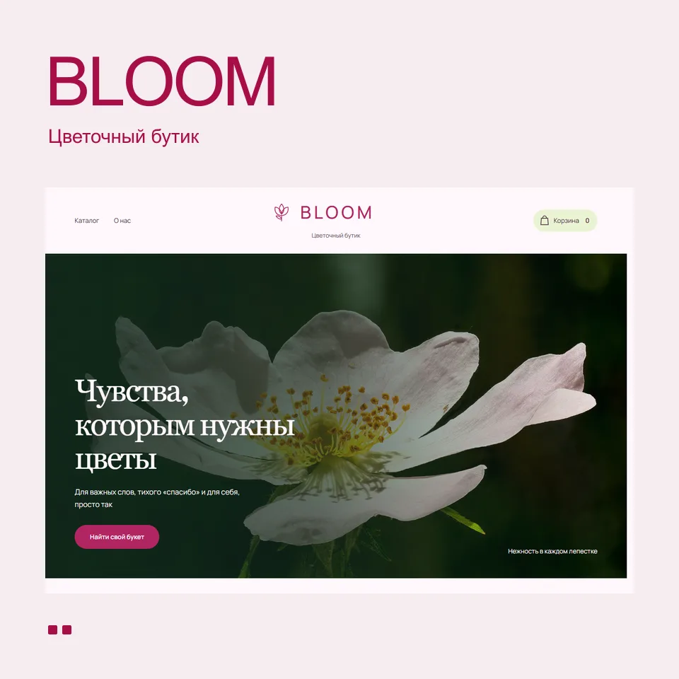

Задача
Создать каталог цветочного бутика, в котором посетитель может выбрать категорию, сравнить букеты и собрать корзину.
Работа над проектом: адаптивный интерфейс каталога и логика корзины на Vanilla JavaScript.
Решение
Фотография задаёт настроение на первом экране, а каталог выводит на передний план сами букеты. Фильтрация и сортировка помогают сузить выбор; количество товаров и итоговая сумма в корзине обновляются без перезагрузки.
Детали реализации
Данные товаров, каталог и корзина разделены на ES-модули. Корзина сохраняется в localStorage. При загрузке сохранение проверяется: неизвестные товары и неверные количества отбрасываются, повреждённый JSON не ломает страницу.
Панель корзины закрывается кнопкой, Escape или нажатием на затемнение. После закрытия фокус возвращается к управляющей кнопке.
Границы проекта
Это демонстрационный каталог. Настоящие заказы, регистрация и оплата не реализованы; товары и цены используются для показа интерфейса.
- HTML
- CSS
- JavaScript
- ES Modules
- localStorage